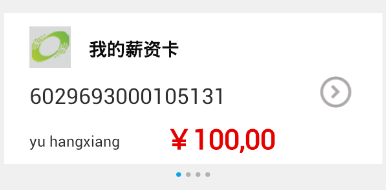

初始状态
从初始状态点击箭头按钮或者手势左滑后变为
从初始状态用手势右滑后变为
上图所示为标准银行储蓄理财界面中的卡片滑动动画：当用户点击卡片上的箭头按钮或者在卡片区域内用手势向左滑，当前卡片会向左平行滑动，下一张卡片从右方滑进；当用户用手势向右滑时，卡片会切换到前一张，卡片的切换是循环的；卡片滑动时，下方的指示图片会相应发生变化，指明当前卡片是第几张。本节将讲述卡片滑动动画的实现方法。
示例的完整代码链接为：scroll_ani.xml
卡片的滑动动画由transition接口中from()和to()函数实现，关于transition接口的详细说明请参照EMP参考手册中的动画。
transition:from()函数指定了目标控件X的起始状态集合A，transition:to()函数指定了目标控件X的结束状态集合B和动画持续的时间t，两者配合使用便形成了一个从A状态到B状态的动画，动画的持续时间为t。例如本节示例中有如下代码：
local ctrl1 = document:getElementsByName("acc_table"..ppindex);
transition:from(ctrl1[1],{x=4});
transition:to(ctrl1[1],{x=-316},0.4);
则获取到的ctrl1[1]控件将会表现为从x=4到x=-316的向左平行移动。
下面我们来具体分析卡片滑动动画的实现方法：
首先，我们需要拼接页面和进行初始化。一张卡片由一个div (代码中的acc_out_div) 展现，div中包含了账号列表table和指示图片列表上下两部分。我们把账号列表信息存放在了table (coll_lists) 中，table中记录的条数 (cardLen) 即为卡片的个数，accout_list(coll_lists)函数拼接了账号列表table和指示图片的报文。可以看到，每条账号信息的记录分别被放到了一个table中，所以一开始我们有四个table，但这四个table的display属性被设置成了不可见，在需要时才使其显示。卡片中的箭头按钮设置了onclick属性，当被点击时会触发changeCard()函数切换卡片，changeCard()函数的实现会在后面说明。
页面拼接的代码片段如下：
<content>
<head>
<style>
.body{width: 320px;height: 460px;background-color: #F0F0F0;}
.acc_out_div{left:0px;top:51px;width:320px;height:170px;}
.acc_table{left:4px;width:312px;top:23px;display:none;}
.tr_acc{height:125px;left:0px;background-image:url(tr_card.png);}
.td_acc{height:125px;left:0px;}
.img_rytong{left:21px;top:11px;height:34px;width:34px;}
.label_acc{left:21px;top:56px;font-size:18px;color:#2E2E2E;}
.label_alias{font-size:15px;color:#0c0c0c;top:19px;left:70px;font-weight:bold;}
.label_species{font-size:12px;color:#2e2e2e;top:97px;left:21px;}
.label_balance{font-size:23px;color:#E60101;top:88px;left:133px;font-weight:bold;}
.pull_button{left:260px;top:52px;height:26px;width:26px;background-image:url(card_pull_but.png);}
.div_img{left:0px;top:148px;width:320px;height:22px;}
.img_show{top:6px;width:4px;height:4px;}
</style>
<script type="text/x-lua">
<![CDATA[
--账户列表table
local coll_lists = {
{accNo="6029693000105131",accAlias="我的薪资卡",balance_species="yu hangxiang",balance_count="￥100,00"},
{accNo="6029693000105132",accAlias="我的理财卡",balance_species="cheng jinhui",balance_count="￥20,000"},
{accNo="6029693000105133",accAlias="我的支付卡",balance_species="huang huihong",balance_count="￥30,000"},
{accNo="6029693000105134",accAlias="融易通薪资卡",balance_species="can langlang",balance_count="￥40,000"}
};
--卡片个数
local cardLen = #coll_lists;
--[[
@doc: 生成转出账号列表, 卡片下方的指示图片列表
@params:
coll_lists: 转出账户列表table
]]--
function accout_list(coll_lists)
local table_channel = "";
local img_list = "";
for key, coll_list in pairs(coll_lists) do
--[[此时key为1,2,3,4]]--
local tr_channel = "";
tr_channel =
tr_channel ..
[[<tr class="tr_acc">
<td class="td_acc">
<img src="local:logo.png" class="img_rytong"/>
<label class="label_acc" name="acc_label]]..key..[[">]]..coll_list["accNo"]..[[</label>
<label class="label_alias" name="alias_label">]]..coll_list["accAlias"]..[[</label><br/>
<label class="label_species" name="species_label">]]..coll_list["balance_species"]..[[</label>
<label class="label_balance" name="balance_label">]]..coll_list["balance_count"]..[[</label>
<input type="button" class="pull_button" onclick="changeCard()" />
</td>
</tr>]];
table_channel =
table_channel .. [[<table class="acc_table" border="0" name="acc_table]]..key..[[">]]
.. tr_channel .. [[</table>]];
img_list =
img_list ..
[[<img src="local:card_slide1.png" class="img_show" name="show_img]]..key..[["/>]];
end;
return table_channel, img_list;
end;
...
]]>
</script>
</head>
<body class="body">
<!--账户卡片-->
<div class="acc_out_div" name="acc_out_div" border="0"></div>
</body>
</content>
initial()函数是初始化函数，它完成了以下工作：
accout_list()函数获得拼接后的报文并刷新页面；set_imgleft()函数设置了指示图片的left值； gesture:setSwipeListener(control, listener);
switchCard()函数，此监听方法在定义时必须有一个参数，类型为table，table中有元素"direction" (有四个值："left"，"right"，"up"，"down")，表示滑动方向。switchCard()函数的实现会在后面说明。初始化的代码片段如下：
<script type="text/x-lua">
...
--[[
@doc:根据名称改变控件样式
@params:
name:控件名称
style:样式名称，比如："height"
value:修改值，需要将控件样式修改的值
@attention:如果界面中有多个此名称控件则这些控件都会被修改。
]]--
function changeStyle(name,style,value)
local ctrl = document:getElementsByName(name);
if ctrl and #ctrl > 0 then
for key,ctrl_atom in pairs(ctrl) do
ctrl_atom:setStyleByName(style,value);
end;
else
window:alert(name .. "控件不存在！");
end;
end;
--[[
@doc:根据名称改变控件属性
@params:
name:控件名称
property:属性，比如："enable"
value:修改值，需要将控件属性修改的值
@attention:如果界面中有多个此名称控件则这些控件都会被修改。
]]--
function changeProperty(name,property,value)
local ctrl = document:getElementsByName(name);
if ctrl and #ctrl > 0 then
for key,ctrl_atom in pairs(ctrl) do
ctrl_atom:setPropertyByName(property,value);
end;
else
window:alert(name .. "控件不存在！");
end;
end;
--[[
@doc: 设置各个指示图片列表的left值
@params:
cardLen: 子账户个数
]]--
function set_imgleft()
local img_width = cardLen*8-4;
for key=1,cardLen do
changeStyle("show_img"..key, "left", 160-img_width/2+(key-1)*8);
end;
end;
--[[初始化]]--
function initial()
--拼接转出账户列表菜单
local table_lists, img_lists = accout_list(coll_lists);
local div_img = [[<div class="div_img" name="img_div" border="0">]]
.. img_lists ..
[[</div>]];
local div_accout = [[<div class="acc_out_div" name="acc_out_div" border="0">]]
.. table_lists ..div_img..
[[</div>]];
--setInnerHTML
local div_accout_ctrl = document:getElementsByName("acc_out_div");
if div_accout_ctrl and #div_accout_ctrl > 0 then
div_accout_ctrl[1]:setInnerHTML(div_accout);
end;
--设置各个指示图片列表的left值
set_imgleft();
changeStyle("acc_table1", "display", "block");
changeProperty("show_img1", "src", "local:card_slide2.png");
--设置卡片滑动监听
gesture:setSwipeListener(div_accout_ctrl[1],switchCard);
end
initial();
...
</script>
这样我们便得到了一个初始的页面：卡片显示账户列表table中的第一个账户信息，第一张指示图片为蓝色表示当前为第一张卡片。
其次，我们需要实现卡片滑动的功能。transfer(direction)函数实现了卡片向左向右滑动的动画效果。参数direction有两个取值："pre"代表切换到前一张卡片，响应向右滑动的手势；"next"代表切换到下一张卡片，响应点击按钮和向左滑动的手势。其中ppindex变量表示当前卡片的索引值，nextIndex表示下一张卡片的索引值，preIndex表示前一张卡片的索引值。transfer(direction)函数先判断direction的值，再分别计算nextIndex或preIndex的值，获得当前和即将显示的卡片控件做出卡片切换的动画，最后修改当前卡片ppindex的值。
transfer()函数的流程图如下：
实现代码如下：
<script type="text/x-lua">
...
--当前卡片索引
local ppindex = 1;
--[[
@doc: 卡片切换动画
@params:
direction: "pre" 代表前一张, "next"代表后一张
]]--
function transfer(direction)
local ctrl1;
local ctrl2;
local nextIndex;
local preIndex;
if direction == "next" then
if(ppindex < cardLen) then
nextIndex = ppindex + 1;
else
nextIndex = 1;
end
ctrl1 = document:getElementsByName("acc_table"..ppindex);
ctrl2 = document:getElementsByName("acc_table"..nextIndex);
transition:from(ctrl1[1],{x=4});
transition:to(ctrl1[1],{x=-316},0.4);
changeStyle("acc_table"..nextIndex, "display", "block");
transition:from(ctrl2[1],{x=320});
transition:to(ctrl2[1],{x=4},0.5);
changeProperty("show_img"..ppindex, "src", "local:card_slide1.png");
changeProperty("show_img"..nextIndex, "src", "local:card_slide2.png");
ppindex = nextIndex;
else
if ppindex > 1 then
preIndex = ppindex -1;
else
preIndex = cardLen;
end
ctrl1 = document:getElementsByName("acc_table"..ppindex);
ctrl2 = document:getElementsByName("acc_table"..preIndex);
transition:from(ctrl1[1],{x=4});
transition:to(ctrl1[1],{x=320},0.4);
changeStyle("acc_table"..preIndex, "display", "block");
transition:from(ctrl2[1],{x=-316});
transition:to(ctrl2[1],{x=4},0.5);
changeProperty("show_img"..ppindex, "src", "local:card_slide1.png");
changeProperty("show_img"..preIndex, "src", "local:card_slide2.png");
ppindex = preIndex;
end;
end;
...
</script>
最后，我们需要实现箭头按钮点击事件的响应函数changeCard()和卡片手势滑动监听的响应函数switchCard()，以控制卡片滑动动画。changeCard()函数只需要使卡片切换到下一张，所以只调用了transfer("next")函数。switchCard()函数有一个参数tdive，它的类型为table，用来接收界面监听到的用户手势滑动的信息。table中有元素direction，通过判断tdive.direction的值可以得知滑动方向，再分别调用transfer("next")和transfer("pre")以控制卡片滑动。
实现代码如下：
<script type="text/x-lua">
...
--[[
@doc: 根据滑动手势切换卡片
@params:
tdive: 滑动监听获得的参数table
]]--
function switchCard(tdive)
if tdive.direction == "right" then
transfer("pre");
elseif tdive.direction == "left" then
transfer("next");
end;
end;
--[[
@doc: 点击按钮切换下一张
]]--
function changeCard()
transfer("next");
end;
...
</script>
在整个卡片滑动动画的实现过程中，要特别注意卡片索引值的计算方法，由于卡片是循环播放的，在到达最后一张卡片继续往后滑或到达第一张卡片继续往前滑时，卡片索引需要单独计算。
初始状态

从初始状态点击箭头按钮或者手势左滑后变为
从初始状态用手势右滑后变为